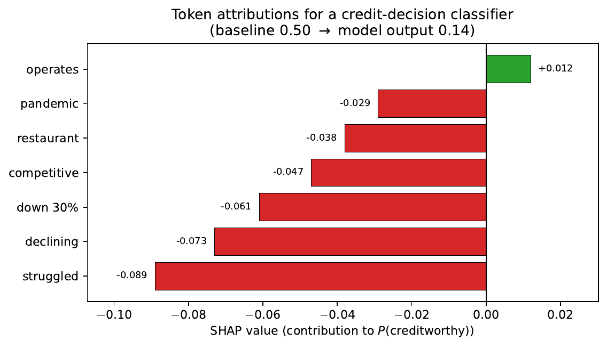

Large Language Models in Finance · Chapter 12 / Lecture 12
Explainability and Interpretability of LLMs in Finance
When a model says "no," the law often demands it say why. How we open the black box — and how to know the answer is real.
Juan F. Imbet · EDHEC Business School / Paris Dauphine – PSL University
Roadmap
Where this lecture is going
Why it's a legal problem — in finance, opacity isn't an inconvenience, it's a compliance failure.
The classic toolkit — SHAP, LIME, attention: borrowed from ML and bent to fit LLMs.
LLM-native explanations — chains of thought, counterfactuals, plain-language justifications.
Three case studies — credit scoring, denial letters, suitability reports.
Judging the explanation — is it faithful, or just convincing?
the bigger picture
The whole lecture turns on one distinction: an explanation that looks right
versus one that is right. In regulated finance, only the second one protects you.
01
Why explainability matters in regulated finance
In most industries a black box is annoying. In finance it is a legal, fiduciary, and reputational liability.
The problem in one scenario
A loan is rejected in seconds — now explain it to the borrower
A small-business owner applies for a working-capital loan. A transformer-based credit
system returns a rejection instantly. The model offers a probability — not a reason.
But the law demands a reason.
What the law requires
Under the Equal Credit Opportunity Act, the loan officer must give the applicant
specific reasons for the denial.
Explainability, defined
The degree to which a human can understand the cause of a model's decision
(Miller, 2019).
Rane, Choudhary & Rane (2023) survey how XAI approaches address the transparency
and accountability requirements specific to the financial domain.
why LLMs sharpen the challenge
Billions of parameters, uninterpretable activations, and outputs that swing with prompt phrasing
in ways that are hard to characterise (Arrieta et al., 2020). Institutions must show outputs are
appropriate, non-discriminatory, and auditable — not merely accurate (SR 11-7).
The compliance map
Four frameworks that turn "explain it" into a requirement
Framework
What it demands
EU AI Act (2024)
Credit scoring & insurance pricing are high-risk (Annex III): transparency, input/output logging, human oversight; must explain what drove a specific decision.
Adverse-action notices must give the "principal reasons" (4–5 factors) in plain language within 30 days. "Not creditworthy" is not enough.
GDPR Art. 22 / FCRA
Right to a "meaningful explanation" of the logic of solely-automated decisions that significantly affect the data subject.
interpretation vs. explanationInterpretation: how does the model work in general?
Explanation: why this output for this input?
Regulatory requirements are primarily explanatory — specific decisions justified to specific persons
(Doshi-Velez & Kim, 2017).
Know your reader
Three audiences, three tolerances for technical detail
The same decision must be explained three different ways. One explanation cannot serve everyone.
Clients / applicants
Actionable, plain-language, contrastive. "DTI of 52% was 10 pp above threshold"
beats "\(x_{17}\) had SHAP \(-0.43\)".
Regulators / examiners
Higher technical rigour. Global behaviour: is there disparate impact?
CFA Institute (2025): institutional investors increasingly require explainability
assurances before deploying third-party AI for portfolio construction.
Auditors / validators
Need both global and local views, and must reproduce explanations.
Non-deterministic XAI is unfit for audit.
the design tension
Methods that satisfy regulators may overwhelm retail clients; methods accessible to clients may be
too simplified for auditors. A real strategy deploys multiple explanation types in parallel.
Why this is genuinely hard
Old models explained themselves; LLMs do not
Intrinsically interpretable classics
Logistic regression: score = weighted sum; the weights are the explanation.
Decision tree: a readable set of binary-split rules.
Why LLMs aren't
Knowledge lives in distributed representations across all layers — no parameter maps to a human concept.
Attention \(\ne\) causal explanation (more soon).
Free-text input \(\Rightarrow\) effectively infinite input space \(\Rightarrow\) exhaustive sensitivity analysis is impossible.
Rudin (2019): stop explaining black boxes
For high-stakes decisions, prefer intrinsically interpretable models.
Finance rejoinder: a model that jointly reads ratios and qualitative business
text may extract signal a numeric model cannot. Whether the extra signal is worth the interpretability
cost is a business/regulatory judgement, not a technical one.
02
Classical XAI methods applied to LLMs
SHAP, attention mechanisms, and feature importance — the three dominant techniques in financial XAI (Mohsin & Nasim, 2025) — but each bends awkwardly when the "features" are words.
SHAP · the idea
Split the credit among features like prize money in a team game
Treat each feature as a player on a team that together produced the prediction. A feature's
score is its average contribution across every order in which players could have joined — a provably
fair division (Shapley, 1953; Lundberg & Lee, 2017).
the bigger picture
The "fair division" framing isn't decoration — it is exactly what lets a lender claim each cited
reason is accountable for a measured slice of the decision.
SHAP · why it fits finance
Three axioms that line up directly with credit law
The Shapley split isn't just convenient — it's the unique attribution satisfying a
set of axioms. Three of them matter directly for regulated credit work.
Efficiency — the attributions add up to the whole prediction; no part of the rejection is left unexplained.
Symmetry — features with identical contributions get identical values.
Dummy — an irrelevant feature gets exactly zero; it can't be blamed.
why this matters for ECOA
Efficiency guarantees the reasons add up to the decision. Symmetry and dummy give the fairness
footing: features are treated consistently and irrelevant ones cannot be cited.
what SHAP cannot do
SHAP measures correlational feature importance within the model — not real-world causation.
A spurious correlation (e.g. jargon correlated with a protected class) is reported faithfully.
Fairness auditing requires a separate step beyond attribution (Mehrabi et al., 2021).
SHAP · on text
What is a "feature" when the input is a sentence?
For text, the feature is the token. But "removing" a token requires deciding
what to replace it with — a mask, a random word, or a sample from a reference model. TreeSHAP is exact for
trees; for LLMs we approximate with KernelSHAP.
Negative tokens cover most of the \(0.50 - 0.14 = 0.36\) gap.
the resulting ECOA statement
"Primarily affected by language indicating declining revenue, operational struggle, and market difficulties."
SHAP · attribution figure
Token-level attributions make the "why" visible — and auditable
Each bar shows a token's contribution to the creditworthy probability. Red pushes down; green pushes up. The figure is generated deterministically from fixed values — the reproducibility property auditors require.

Figure. Token-level SHAP attributions for the credit-decision classifier of the chapter example. Red (negative) bars push \(P(\text{creditworthy})\) down from the 0.50 baseline toward the model's 0.14 output; "operates" makes a small positive (+0.012) contribution. The negative tokens together account for most of the 0.36 prediction gap.
Source: deterministically generated by gen_shap_attribution.py from fixed example values (no live model or data).
LIME · local surrogates
Approximate a tangled model with a simple one — but only nearby
the bigger picture
A globally non-linear model is locally almost linear. So fit a simple, interpretable model in
the small neighbourhood around the one decision you need to explain (Ribeiro et al., 2016).
Recipe: (1) perturb the input by masking features; (2) ask the model for its prediction on
each; (3) fit a sparse linear model, weighting nearby perturbations most.
Advantage
Truly model-agnostic — needs only query access. Works on closed APIs (GPT-5, Claude) with no gradients.
disadvantage: instability
Stochastic perturbations \(\Rightarrow\) different explanations on reruns (Arrieta et al., 2020).
Fix a seed for audit reproducibility.
Attention · promise and limits
The tempting shortcut that can quietly mislead an auditor
Attention weights (Vaswani et al., 2017) sum to one, so it's tempting to colour tokens by
attention and say "this word drove the output." Clark et al. (2019) explored BERT heads attending to
syntactic relations — tempting as explanation. Often wrong.
why this is weakJain & Wallace (2019): adversarial alternative attention distributions give
identical predictions \(\Rightarrow\) attention is not a unique explanation.
Wiegreffe & Pinter (2019): attention can still be a useful diagnostic, not a causal account.
Faithful vs. plausible (Jacovi & Goldberg, 2020)
Faithful: accurately reflects the causal process producing the output.
Plausible: looks convincing to humans, regardless of the true computation.
Attention is often plausible but unfaithful — dangerous: it can make an
auditor certify a decision as well-reasoned when the real drivers differ. Integrated Gradients
(Sundararajan et al., 2017) gives stronger faithfulness — but needs gradients, so no closed APIs.
03
LLM-native explainability mechanisms
Instead of probing from outside, use the model's own language — reasoning traces, counterfactuals, and plain-language justifications.
Chain of thought · the idea
Have the model show its work — in words a regulator can read
the bigger picture
Rather than reverse-engineering a black box after the fact, ask the LLM to emit a reasoning trace
before the answer. The trace doubles as a plain-language explanation you can read and archive.
Chain-of-thought (Wei et al., 2022) does two jobs at once.
Better decisions on multi-step inference — e.g. covenant-breach checks.
A ready explanation — natural-language reasoning for both applicant and auditor.
Chain of thought · the catch
A fluent rationale is not proof of how the model decided
A reasoning trace looks like an explanation. The danger is treating it as one
without evidence that it reflects the actual computation.
faithfulness risk
The model's real inference is parallel matrix computation — not sequential reasoning. A fluent trace
may not reflect it. Self-consistency (Wang et al., 2022): sample \(K\) traces, take the
majority answer \(\Rightarrow\) more accurate, more consistent.
practical stance for finance
Use CoT for its decision-quality gains and as a human-readable draft — but do not
present the trace to a regulator as the causal account of the decision unless it has passed a
counterfactual-faithfulness check.
A counterfactual finds the closest state of affairs in which the decision flips. It is
actionable by construction (Wachter et al., 2017).
Compare the two phrasings
"DTI of 54% was a key negative" attribution
is weaker than
"a ratio below 45% would likely lead to approval, all else equal" counterfactual
Counterfactuals · feasibility
The closest answer may be one you can't act on — or can't legally cite
Solving the optimisation is only half the job. The nearest counterfactual is often
not something a person can change — or something a lender may lawfully mention.
Text makes this hard, and constraints matter
A discrete input space means no direct gradient descent. The practical route is two-stage: identify the
sensitive dimensions, then articulate them (often with an LLM). The closest counterfactual may
be infeasible ("if your age were different") or illegal — age is
protected under ECOA. Add feasibility and non-discrimination constraints.
the actionability payoff
Done right, a counterfactual turns a denial into guidance: "lower your DTI below 45%" is something an
applicant can pursue, unlike a raw SHAP score. That is why regulators and clients both tend to prefer it.
Natural-language justifications
Let each component do one job — and only its job
The robust pipeline separates deciding, attributing, and explaining into three independently
testable parts.
1 · Primary model
Decides. Evaluated for predictive accuracy.
2 · Attribution (SHAP / IG)
Identifies top drivers. Evaluated for faithfulness to that model.
Tatsat & Shater (2025) show that mechanistic interpretability — analysis of attention heads and
circuits — can trace behaviour in financial LLMs without relying solely on post-hoc wrappers.
3 · LLM generator
Translates drivers into prose. Evaluated for clarity, completeness, compliance.
Cetintav et al. (2024) demonstrate GPT-4o translating SHAP outputs into natural-language
explanations accessible to non-expert users.
the generator must not hallucinate attributions
If SHAP said "revenue decline," the generator must not add "poor personal credit history" —
even if plausible. Feed attribution scores as structured input; constrain via prompt
engineering or constrained decoding to refer only to provided attributions.
04
Case studies in financial explainability
Three real shapes the architecture takes: SME credit scoring, denial letters, and suitability disclosures.
Case study 1 · hybrid credit scoring
A three-stage pipeline where the LLM never makes the call
A fintech lender combines numbers and text, then lets an LLM write — but only inside tight rails.
Structured (42 vars): gradient-boosted tree + exact TreeSHAP.
Adverse-action generation: GPT-5, constrained to the attribution feed (DTI −0.18, revenue −0.12, text −0.09, cash reserve −0.07, industry −0.05). 150-word limit; no unlisted factors; no protected characteristics.
the principle — and the evidence
LLMs are safest in the explanation layer when inputs are tightly constrained by upstream attribution.
Schmitt (2024) shows that combining AutoML with post-hoc SHAP attribution improves both predictive
accuracy and model transparency, satisfying interpretability requirements without sacrificing performance.
Case study 2 · ECOA/FCRA denial letters
Two ways a compliant letter goes wrong
Reg. B requires notice within 30 days: specific reasons, the right to a
statement of reasons, and a free consumer-report copy if one was used. "Principal reasons" usually means
4–5, stated specifically.
failure mode 1: vagueness
"credit profile did not meet criteria" — insufficient.
"DTI 54% exceeded our 45% max" — compliant.
failure mode 2: protected factors
Demographic signals in text \(\Rightarrow\) the explanation may reference race, sex, age… Must filter.
Desai (2024) frames explainability as an optimisation constraint via Shapley and information-theoretic
measures, covering BSA/AML and Consumer Compliance audit categories.
Lakarasu (2024) proposes an XAI-prompted compliance platform addressing EU AI Act Article 13 obligations.
Case study 3 · MiFID II suitability
Explaining, before execution, why a product fits the client
MiFID II requires investment firms to give retail clients a suitability report
explaining why a product fits their objectives, risk tolerance, situation, and knowledge — before execution (ESMA, 2018).
CFA Institute (2025): three requirements for AI-generated disclosures
Reasoning traceable to the client data on file.
Language must not overstate returns or understate risks.
Auditable / reproducible: same data + config → materially equivalent document.
Structured profile → risk tier + suitability score → Integrated Gradients → top-3 drivers → LLM prompted
to use stated horizon & risk tolerance, acknowledge capital-loss risk, cite no return figure absent
from the KID → compliance filter. Quarterly 2% human sample; illustrative revision rate
\(\approx 0.3\%\), all from objective-vs-product tension.
05
Evaluating the quality of explanations
There is no ground-truth explanation to check against — so we measure faithfulness, completeness, plausibility, and human utility (Nauta et al., 2023).
Faithfulness · the core test
Does the explanation actually move the prediction?
Unlike predictions, an explanation has no ground truth to benchmark against. The
workaround: poke the model and watch. Keep only the "important" features — does the prediction survive?
Remove them — does it collapse?
How the methods score
Method
Behaviour
SHAP
efficiency property → a form of sufficiency for the full set
LIME
may fail sufficiency: a deliberately sparse surrogate omits correlated features
Attention
typically fails comprehensiveness: ablating attended tokens often leaves output unchanged
Two more axes
Completeness and plausibility — and why plausibility is a trap
Completeness
Does it account for all relevant drivers, not just the top one? An ECOA notice citing 1 of
5 significant reasons is incomplete.
Plausibility
Would a domain expert agree it makes sense? "high DTI" is plausible; "the word the" is
implausible (even if accurate). Correlates with — but is not — faithfulness. Measured by
agreement with expert annotation, or readability for ECOA audiences.
key distinction
A plausible explanation may be faithful or unfaithful. Plausibility alone is a poor quality gate.
Human-subject studies
The ultimate test: can an expert actually use it?
Regulation cares whether a qualified expert can use the explanation to make
appropriate decisions. Three standard designs (Doshi-Velez & Kim, 2017; Nauta et al., 2023):
Design
What it tests
Forward simulation
Given an explanation, predict the model's output on a held-out input.
Decision support
Approve/reject with vs. without explanations — does it help catch model errors?
Trust calibration
Should raise trust on correct predictions, lower it on incorrect ones. CFA Institute (2025): explanations may reduce overreliance, especially in high-uncertainty conditions.
Practical constraint: credit officers and compliance specialists are
expensive participants. Alternative: vignette studies with synthetic scenarios via professional networks.
the trap
Experts often find plausible-but-unfaithful explanations just as satisfying as faithful ones.
Human evaluation alone is not a reliable gate — pair it with quantitative faithfulness metrics.
Wrap-up
Five takeaways — and the architecture that ties them together
Explainability is a legal requirement, not an aspiration: EU AI Act, SR 11-7, ECOA, MiFID II.
Classical XAI adapts to LLMs but not trivially: SHAP & LIME need feature definitions and marginalisation/perturbation schemes; both can be unstable (Arrieta et al., 2020).
Attention is not faithful in general; gradient methods (Integrated Gradients) are stronger but need model internals.
LLM-native methods (CoT, counterfactuals, NL justifications) give plain language — but constrain the generator to upstream attributions and add compliance filters.
Evaluate on multiple axes: faithfulness, completeness, plausibility, human utility. No single metric suffices.
the recurring architecture
Decide → attribute (faithfully) → translate (constrained LLM) → filter (compliance) → human review.
Auditable at every stage.
Connects to: Credit Risk (calibration / validation prerequisites for
SHAP pipelines) · LLM Agents (CoT as planning) · Applications & Future (fairness / bias, tied to
ECOA non-discrimination).
A
Appendix — deeper foundations, benchmarks & further reading
Why Shapley is unique, why marginalising a token is hard, and a reading list. Beyond the core lecture.
Appendix A · foundations
Why Shapley values are "fair"
The strange-looking combinatorial weight is just a probability: how likely feature \(i\) is
to join coalition \(S\) at that position in a uniformly random ordering.
Axiomatic uniqueness (Shapley, 1953)
The Shapley value is the unique attribution satisfying efficiency, symmetry, dummy, and
additivity simultaneously.
Exact Shapley: exponential in the number of features.
TreeSHAP (Lundberg et al., 2020): exact, polynomial-time for tree ensembles.
Neural nets / LLMs: KernelSHAP sampling approximation — its locality weighting connects directly to LIME's proximity kernel.
Appendix B · the text wrinkle
Marginalising a token is hard
SHAP needs the model's prediction when a feature is "unknown." For tabular data you
marginalise over the data distribution. For discrete text, that expectation over a token's
marginal distribution given context requires a language model itself.
Three practical surrogates
Replace with a [MASK] token.
Replace with a randomly sampled vocabulary token.
Sample from a smaller reference language model.
document the choice
Each choice changes the reference distribution — and hence the attribution. Record it for audit.
Appendix C · the figure
SHAP attribution for the credit example
Token-level SHAP attributions for the credit-decision classifier. Red (negative) tokens push
\(P(\text{creditworthy})\) down from the 0.50 baseline toward 0.14; "operates" adds +0.012.
Figure. Each horizontal bar is a token's contribution to the predicted probability of the "creditworthy" class. Negative (red) contributions pull the prediction from the 0.50 baseline toward the 0.14 model output.
Source: deterministically generated by gen_shap_attribution.py from the fixed values in the chapter example — depends on no live model or data.
Appendix D · further reading
Where to go next
Foundations: Shapley (1953) axiomatic uniqueness; Lundberg & Lee (2017) unified additive attribution; Lundberg et al. (2020) TreeSHAP.
LIME: Ribeiro et al. (2016) — readable, worked text/image/tabular examples.
Evaluation: Doshi-Velez & Kim (2017); Nauta et al. (2023) — vocabulary for human-subject XAI.
Counterfactuals: Wachter et al. (2017) — includes GDPR Art. 22 context.
Human side: Miller (2019) — what users actually want from explanations.
Attention debate: Clark et al. (2019); Jain & Wallace (2019) vs. Wiegreffe & Pinter (2019); resolution by Jacovi & Goldberg (2020).
Fairness: Mehrabi et al. (2021); Rane, Choudhary & Rane (2023).
Regulation: EU AI Act (2024); ESMA MiFID II suitability (2018); Fed SR 11-7; CFA Institute (2025); Arrieta et al. (2020) full taxonomy.